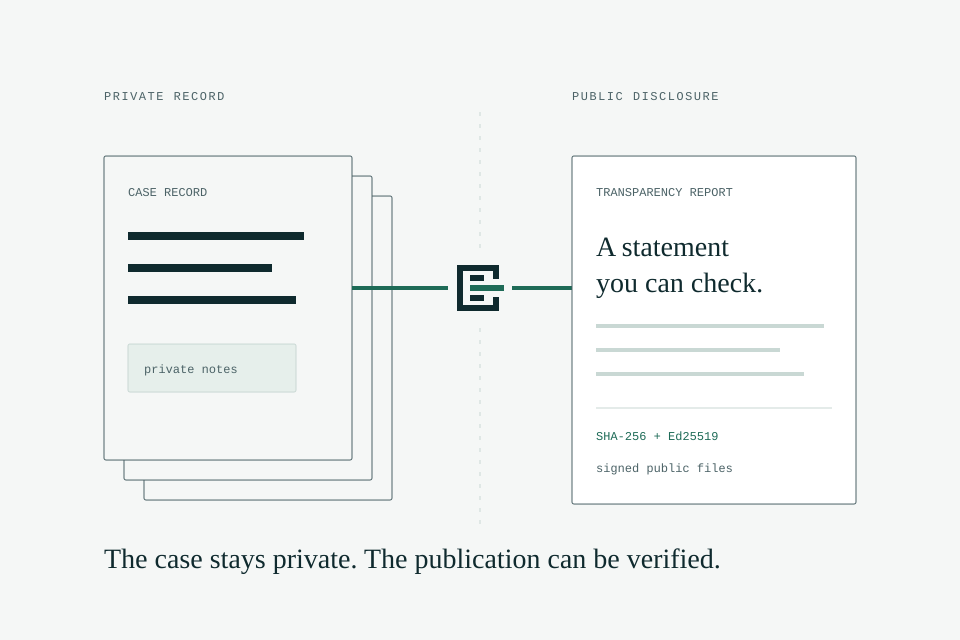
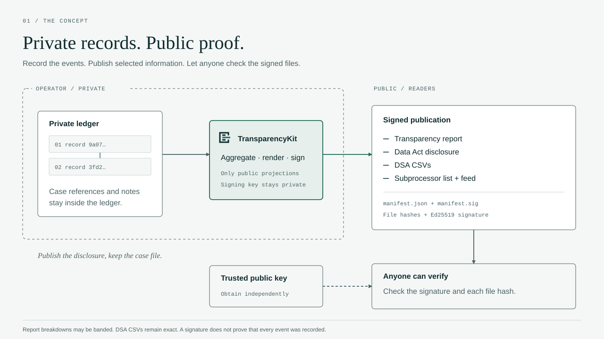
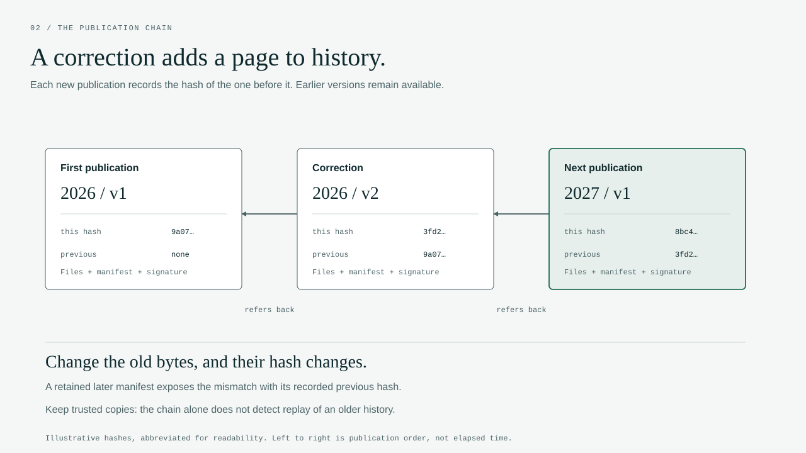

Transparency reports anyone can verify.
Keep a private, tamper-evident ledger of government requests, abuse notices and infrastructure changes. Publish signed disclosures that customers and auditors can check for themselves.
go install github.com/transparencykit/transparencykit/cmd/tkit@latest

Private records. Public proof.
Your ledger holds the case details. TransparencyKit publishes public projections, then signs a manifest of the files. Readers check those files using a public key they trust.

A publication you can inspect
See the records become a report.
Meet So Sovereign Cloud SA, a fictional provider with 117 ledger records. Browse its published report, read the Data Act disclosure, or verify the signed files yourself.
Open the example reportSo Sovereign Cloud SA (fictional), transparency report 2026
- Government and authority requests
- 29
- Requests rejected
- 13
- Accounts specified in requests
- 53
- Disclosures to third-country authorities
- 0
Signed example publication
Key ed25519:393c7a476c60c098 · run the verification
One ledger, every disclosure
Record each event once. Generate the transparency report, Data Act page, DSA data and subprocessor feed from the same ledger state.
-
Voluntary, following Ranking Digital Rights P11a
Transparency report
Government and authority requests by country, outcome, data type and customer notification, with third-country requests such as CLOUD Act orders shown on their own. Abuse notices by category and action.
-
Regulation (EU) 2023/2854, Art. 28
Data Act disclosure
The jurisdiction of every zone and the technical, organisational and contractual measures against foreign governmental access, on a stable URL your contracts can reference.
-
Regulation (EU) 2022/2065, Art. 15
DSA transparency data
Orders, notices and own-initiative measures for hosting providers, with exact figures in CSV files that follow the tab structure of the Commission's template.
-
GDPR Art. 28 practice
Subprocessor list and feed
The current list and a dated change history, with an Atom feed customers can subscribe to instead of scraping your website.
How it works
One static binary, your storage and your signing key. Start locally, then move to object-locked storage.
-
Record
Append each request or change when it happens. Records are validated, hash-chained and stored in an object-locked bucket. Case details stay private.
tkit record add gov_request -f req.json -
Publish
Aggregate a period, render every output and sign a manifest that lists each file's hash. Small counts are shown as ranges; zeros stay exact.
tkit publish --period 2026 -
Verify
Customers, auditors and journalists check signatures, file hashes and links to earlier publications with a trusted public key.
tkit verify --pubkey acme.pub --chain \ https://transparency.acme.example
History you can check.
A correction adds a new version. Each publication records the hash of the one before it, so a retained later manifest can reveal changes to earlier bytes.

Check the publication. The signed manifest lists file hashes. A signature authenticates those files; it does not prove that every event was recorded.
Connect it to the ledger. Each manifest commits to a ledger head. An auditor with ledger access can check that commitment and review the underlying records.
Built for providers who host in Europe
- One static binary. Written in Go with no third-party dependencies, so the supply chain is short enough to audit.
- Your storage, your keys. State lives in Exoscale SOS or any S3-compatible bucket you control. Nothing is sent to anyone else.
- Immutable by design. Records are append-only and object-locked. Mistakes are amended or retracted, never deleted.
- What you need. Two buckets on any S3-compatible storage: a private ledger bucket created with object lock, and a public one for reports. See the storage requirements.
- Private stays private. Case references and notes are hashed into the ledger but never appear in a published file.
- Open source. Apache-2.0. Read the specification, run the tests, change what you need.
- Not legal advice. Have counsel review your categorisations and the DSA mapping before you file.